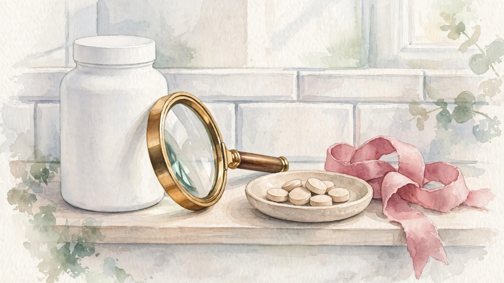

トップ ＞ インナーケア・サプリ ＞ サプリの成分表示の読み方：原材料名と含有量、ここを見る
サプリの成分表示の読み方：原材料名と含有量、ここを見る

サプリメントを選ぶとき、表のデザインやキャッチコピーに目が行きがちですが、私が必ず見るのは裏面の表示です。施術のお客様との会話でも「どれを選べばいいか分からない」という声をよく聞きます。この記事では、特定の商品や成分をおすすめするのではなく、表示の読み方の順番を整理します。
原材料名は「多い順」に並んでいる
食品の表示では、原材料名は使用した量の多い順に書く決まりになっています。つまり、パッケージ裏の原材料名の並びを見ると、その商品の中で何が主役なのかが大まかに分かります。気になっている成分の名前が、並びの前の方にあるか、後ろの方にあるか。それだけでも、商品ごとの性格の違いが見えてきます。
また、原材料と添加物は区分して表示されます。名前の羅列をすべて覚える必要はありませんが、「原材料名の欄で、見たい成分がどの位置にあるか」を確認する習慣は、買い物のときの判断材料を増やしてくれます。
私は買い物のとき、まず商品を裏返して、原材料名の最初の3つを見ることにしています。それだけで、その商品の「骨格」がだいたい見えるからです。
含有量の表示があるかどうか
成分によっては、原材料名に名前が出てくるだけでなく、「1日分あたり◯mg含有」のように量が明示されている商品があります。量が書かれている方が、自分の想定と比べやすく、商品同士の比較もしやすくなります。逆に、量の表示がない場合は、その成分がどれくらい入っているのかは、表示からは分かりません。
あわせて見たいのが栄養成分表示です。エネルギー、たんぱく質、脂質、炭水化物、食塩相当量といった基本の項目は、1日分あたり、あるいは100gあたりなど、単位が商品によって違います。比べるときは単位をそろえて見るのがポイントです。
なお、含有量の数字は「1粒あたり」なのか「1日分あたり」なのかで意味が変わります。単位の前提がどこに書かれているかも、読み合わせのポイントです。
一日摂取目安量と、生活との相性
「1日◯粒を目安に」という表示も大切です。粒の大きさ、1日に飲む回数といった案内は商品ごとに異なります。朝だけなのか、朝晩に分かれるのかで、続けやすさは変わります。私は、自分の生活の流れに無理なく組み込めるかどうかを、選ぶときの基準のひとつにしています。
また、パッケージには「機能性表示食品」「栄養機能食品」といった区分が書かれているものもあります。これらは表示のルールが通常の食品と異なる区分です。区分の詳しい内容は、消費者庁などの公的な案内で確認するのが確実です。アレルギーのある方は、特定原材料などのアレルギー表示の確認も忘れずにどうぞ。
「摂取上の注意」の欄も読む
パッケージには、原材料や成分とは別に、摂取上の注意が書かれていることがあります。「1日の目安量を守る」「多量に摂りすぎない」「妊娠中・授乳中の方は医師等に相談を」といった案内です。こうした注意書きは、その商品を食品として使ううえでの大切な情報なので、買う前に目を通しておく価値があります。
特に、複数のサプリメントを併用している場合は、それぞれの表示を並べて見ることが大切です。同じ成分が重なっていないか、1日の目安量の合計がどうなるか。表示は、そのための材料として用意されています。
サプリメントは食品であり、身体への作用を断定するものではありません。この記事は表示の読み方の案内です。体調に不安がある方、医薬品を服用中の方は、医師・薬剤師等の専門家にご相談ください。
セラフィナ「裏の表示は、成分の名簿みたいなものだね。並び順と量、まずそこから読んでみよう」